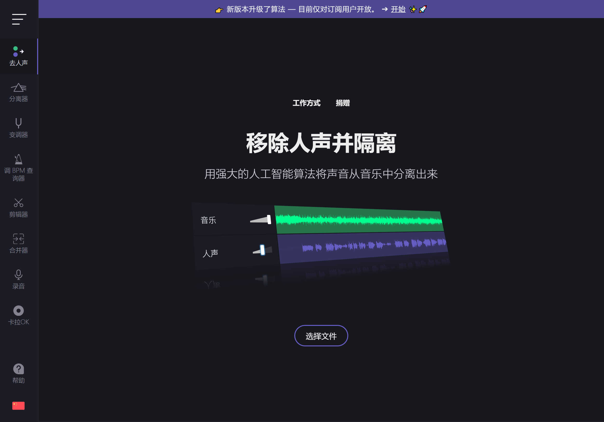

VocalRemover 迭代观察：从一个去人声小工具到九件套音频工作室
这款在线音频工具一路走来，从单纯的"去人声"扩展成涵盖分离、剪辑、变调、录音的完整工作流。我从样本文档里能摸到的迭代规律。
现在这版是什么样
我第一次打开 VocalRemover官网 的时候，首页就是一个大上传框，拖进去一首歌等二十秒，下来两条轨——人声和伴奏。干净利落，一个功能解决一个痛点。
现在再看，它已经长成了一个九件套的在线音频工作室。首页那个熟悉的上传框还在，但往下拉一拉，能看到 Remover、Splitter AI、Cutter、Joiner、Pitch、Key BPM Finder、Voice Recorder、Tap Tempo——每个都是独立的小工具，各自有自己的页面和逻辑。最有意思的是，它把这些工具串成了完整的工作流：从找调、变调速、去人声、到录唱、剪辑，全程浏览器里跑完，不需要装任何额外软件。

而且它把两类工具分得很清楚：Remover 和 Splitter AI 是 AI 处理，走服务器，有日额度限制（免费版每天 10 分钟）；剩下六个——Cutter、Joiner、Pitch、Key BPM Finder、Voice Recorder、Tap Tempo——全是浏览器本地跑的，零费用、零额度、无限用。这个设计选择在我看来是它这些年迭代里最聪明的一笔：AI 处理是"可选消费"，基础编辑能力全免费且无限制。哪怕你哪天 10 分钟额度用完了，变调、剪辑、调性分析这些照样能开。
来路：从单工具到全家桶的脉络
样本文档里没给版本号，没说 Remover 是哪年上线的、Splitter AI 是什么时候加进来的。但从工具的形态差异里能摸到一条清晰的迭代线。
最早的那个核心功能肯定是 Remover——把一首歌拆成人声和伴奏两条轨。这是 VocalRemover 名字的由来，也是它最初的产品定位：给 K 歌爱好者快速扒伴奏。Remover 的设计极简到极致：上传 → 等 10~30 秒 → 下载两条 WAV。没有参数调，没有选项，就是最快拿到结果。
然后加进来的应该是本地工具。Cutter、Joiner、Pitch、Key BPM Finder 这几个有一个共同点——它们不需要服务器处理，纯浏览器里跑。为什么是这个顺序？我猜 Remover 上线后，用户反馈最多的就是"拿到伴奏了，但我想升调升不上去"、"伴奏太长了想截一段"。把这些需求做成浏览器本地工具，成本极低，响应极快，而且永远不占服务器资源。这是一个很务实的扩展方向——不先砸钱搞更复杂的 AI，先把用户拿到分离结果之后要做的事补上。
Splitter AI 是一个质的飞跃。Remover 拆两轨（人声 + 其他所有），Splitter AI 直接拆四轨（人声 + 贝斯 + 鼓 + 其他）。这不只是多了两轨的事——它把"伴奏"这个概念从一个东西拆成了三个：贝斯、鼓、剩余乐器。用户可以单独静音某轨、可以换某个乐器、可以把不同歌的鼓组拼在一起做 mashup。处理时间从 Remover 的 20 秒拉到了 1~2 分钟，但精度和控制力是 Remover 给不了的。而且 Splitter AI 有独立的四轨音量滑杆，Remover 的两轨是固定的——这说明团队在 AI 分离的模型上做了大的升级，不是简单的功能叠加。

最近的迭代应该是 Voice Recorder 和卡拉OK录音这条线。我在VocalRemover文档里翻到了一个完整的翻唱工作流——从选歌到出成品，九步串起来。这个工作流的设计思路很明确：把 VocalRemover 从一个"处理工具"变成一个"创作平台"。以前你用它扒伴奏，然后自己找录音软件录；现在直接在 VocalRemover 里录，录完直接剪辑变调，一条龙。
从迭代节奏看团队在死磕什么
有一件事让我印象很深：VocalRemover 从第一天到现在，始终没有做桌面端。它就是一个纯在线工具，纯浏览器运行——你不用去VocalRemover下载找安装包，打开浏览器就行。这个选择让我挺意外的——音频处理软件的主流形态是桌面端（Audacity、GarageBand、Logic Pro），功能强、离线用、处理快。但 VocalRemover 偏不，就是浏览器里搞定一切。
我在样本文档里看到了背后的逻辑：浏览器本地处理 = 零安装、跨平台、零维护负担。你用 Windows、Mac、Linux、甚至手机浏览器，打开就用，效果完全一样。Cutter 的淡入淡出滑杆、Pitch 的变调试听、Key BPM Finder 的实时检测——这些全是浏览器里的实时处理，不需要上传到服务器。
另一个一直在死磕的是工作流的完整度。从 Remover → 加本地编辑工具 → 加 Splitter AI 精细分离 → 加录音能力，每一步都不是孤立加一个功能，而是往"用户从一首歌到一个成品"这条链上补一环。样本文档里那个七步翻唱工作流，说明团队在刻意地把散落的工具串起来，让用户不用在不同网站之间跳来跳去。
反过来，什么一直没做？参数调节。Remover 和 Splitter AI 都没有模型选择、分离精度滑杆、降噪阈值这些东西——上传、等结果、下载，三秒钟搞定。这是一个有意思的取舍：团队选择了"最好用"而不是"最强"。你想要精细的 AI 音频分离？那去专业软件。你想要最快拿到能用的伴奏？VocalRemover 就是。
预判：照这个路线下一步会往哪走
从它的迭代规律推，我觉得有几个大概率方向。
第一，AI 处理和本地处理的边界会继续模糊。现在的 Splitter AI 已经能拆四轨，但处理完之后还是要手动下载、手动拼接。下一步可能是直接在 Splitter AI 页面里内置拼接器——拆完四轨，勾选要保留的轨，点一下就拼好新的伴奏，不用再切去别的工具。
第二，额度机制可能会变。现在免费版 10 分钟/天是死的，会员 500 分钟/天。但 Splitter AI 和 Remover 消耗一样多的额度（都是歌曲时长），对批量处理的用户来说，Splitter AI 其实性价比更高——因为拆四轨消耗的额度和拆两轨一样，但精度更高。这个定价逻辑撑不了太久，可能会改成"按处理量"或者"按分辨率"计费。
第三，也许会有轻量级的桌面端壳。不是完整的桌面软件，就是一个 Electron 包装器，让 VocalRemover 能离线用那些本地工具、能批量拖文件。它的核心竞争力还是浏览器端的零安装体验，但加个壳能覆盖一些需要离线或批量的场景——毕竟现在大文件上传确实是个瓶颈，样本文档里保守建议单个文件 ≤ 50MB，更大的可能超时。
不过这些都是从迭代规律推的，不是官方口径。等下一批样本文档出来，看看实际走到哪了。顺手把和 VocalRemover 相关的整理也分别传到了 GitHub、Gitee、GitCode，哪边访问顺畅就去哪边。